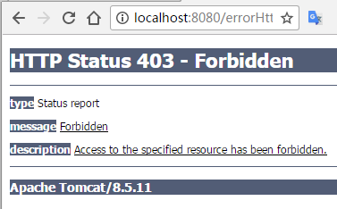
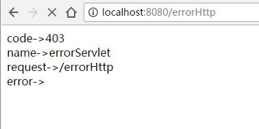

Http状态码
对于一个http请求，服务器的返回response是遵行一定的消息格式的，其基本的格式为：
HTTP/1.1 200 OK 协议/版本号 状态码 状态码短消息
Content-Type:text/html 标题行
Header2:...
...
HeaderN:...
空白行
<!doctype ..> 消息主体（可选）
<html>
...
</html>
状态码含义
| 代码 | 消息 | 描述 |
|---|---|---|
| 100 | Continue | 只有请求的一部分已经被服务器接收，但只要它没有被拒绝，客户端应继续该请求。 |
| 101 | Switching Protocols | 服务器切换协议。 |
| 200 | OK | 请求成功。 |
| 201 | Created | 该请求是完整的，并创建一个新的资源。 |
| 202 | Accepted | 该请求被接受处理，但是该处理是不完整的。 |
| 203 | Non-authoritative Information | |
| 204 | No Content | |
| 205 | Reset Content | |
| 206 | Partial Content | |
| 300 | Multiple Choices | 链接列表。用户可以选择一个链接，进入到该位置。最多五个地址。 |
| 301 | Moved Permanently | 所请求的页面已经转移到一个新的 URL。 |
| 302 | Found | 所请求的页面已经临时转移到一个新的 URL。 |
| 303 | See Other | 所请求的页面可以在另一个不同的 URL 下被找到。 |
| 304 | Not Modified | |
| 305 | Use Proxy | |
| 306 | Unused | 在以前的版本中使用该代码。现在已不再使用它，但代码仍被保留。 |
| 307 | Temporary Redirect | 所请求的页面已经临时转移到一个新的 URL。 |
| 400 | Bad Request | 服务器不理解请求。 |
| 401 | Unauthorized | 所请求的页面需要用户名和密码。 |
| 402 | Payment Required | 您还不能使用该代码。 |
| 403 | Forbidden | 禁止访问所请求的页面。 |
| 404 | Not Found | 服务器无法找到所请求的页面。. |
| 405 | Method Not Allowed | 在请求中指定的方法是不允许的。 |
| 406 | Not Acceptable | 服务器只生成一个不被客户端接受的响应。 |
| 407 | Proxy Authentication Required | 在请求送达之前，您必须使用代理服务器的验证。 |
| 408 | Request Timeout | 请求需要的时间比服务器能够等待的时间长，超时。 |
| 409 | Conflict | 请求因为冲突无法完成。 |
| 410 | Gone | 所请求的页面不再可用。 |
| 411 | Length Required | "Content-Length" 未定义。服务器无法处理客户端发送的不带 Content-Length 的请求信息。 |
| 412 | Precondition Failed | 请求中给出的先决条件被服务器评估为 false。 |
| 413 | Request Entity Too Large | 服务器不接受该请求，因为请求实体过大。 |
| 414 | Request-url Too Long | 服务器不接受该请求，因为 URL 太长。当您转换一个 "post" 请求为一个带有长的查询信息的 "get" 请求时发生。 |
| 415 | Unsupported Media Type | 服务器不接受该请求，因为媒体类型不被支持。 |
| 417 | Expectation Failed | |
| 500 | Internal Server Error | 未完成的请求。服务器遇到了一个意外的情况。 |
| 501 | Not Implemented | 未完成的请求。服务器不支持所需的功能。 |
| 502 | Bad Gateway | 未完成的请求。服务器从上游服务器收到无效响应。 |
| 503 | Service Unavailable | 未完成的请求。服务器暂时超载或死机。 |
| 504 | Gateway Timeout | 网关超时。 |
| 505 | HTTP Version Not Supported | 服务器不支持"HTTP协议"版本。 |
设置HTTP状态码
HttpServletResponse对象提供了设置HTTP状态码的方法
public void setStatus ( int statusCode ) 该方法设置一个任意的状态码。setStatus 方法接受一个 int（状态码）作为参数。 若包含了一个特殊的状态码和文档，要在使用 PrintWriter 实际返回任何内容 之前调用 setStatus。 public void sendRedirect(String url) 该方法生成一个 302 响应，连同一个带有新文档 URL 的 Location 头。 public void sendError(int code, String message) 该方法发送一个状态码（通常为 404），连同一个在 HTML 文档内部自动格式化 并发送到客户端的短消息
状态码实例
@WebServlet(name="errorServlet", urlPatterns = "/errorHttp")
public class ErrorServlet extends HttpServlet {
public void doGet(HttpServletRequest request, HttpServletResponse response)
throws IOException {
response.sendError(407, "need authentication");
}
}
运行一下：

但是，这样直接显示错误提示是非常不友好的，需要将错误跳转好更加友好的展示页面。
Servlet异常处理
当一个Servlet抛出一个异常时，Web容器使用在web.xml中配置的exception-type元素的异常类型进行处置。
配置一个使用ErrorHandler的Servlet处理异常状态的web.xml
<web-app>
<error-page>
<location>/errorHandler
</error-page>
</web-app>
需要注意的是，对于servlet 3.0来说，error-page不再需要配置error-code或者exception-type，而是只能配置一个location，所有的错误都将交由这个location所指向的url来处理。
那么，在添加一个能够处理/errorHandler的servler，
@WebServlet(name="errorHandler", urlPatterns = {"/errorHandler"})
public class ErrorHandler extends HttpServlet {
public void doGet(HttpServletRequest request, HttpServletResponse response)
throws IOException {
Throwable throwable = (Throwable)request.getAttribute("javax.servlet.error.exception");
Integer statusCode = (Integer)request.getAttribute("javax.servlet.error.status_code");
String servletName = (String)request.getAttribute("javax.servlet.error.servlet_name");
if(servletName == null){
servletName = "unKnown";
}
String requestUrl = (String)request.getAttribute("javax.servlet.error.request_uri");
if(requestUrl == null){
requestUrl = "unKnown";
}
response.setContentType("text/html;charset=UTF-8");
PrintWriter pw = response.getWriter();
pw.append("<html><head><title>servlet error</title></head>")
.append("<body>")
.append("code->").append(statusCode.toString()).append("
")
.append("name->").append(servletName).append("
")
.append("request->").append(requestUrl).append("
")
.append("error->").append(throwable.getMessage())
.append("</body></html>");
pw.flush();
pw.close();
}
}
那么，再运行一下http://localhost:8080/errorHttp

servlet处理的错误属性，有以下几个：
| 属性 & 描述 |
|---|
| javax.servlet.error.status_code 该属性给出状态码，状态码可被存储，并在存储为 java.lang.Integer 数据类型后可被分析。 |
| javax.servlet.error.exception_type 该属性给出异常类型的信息，异常类型可被存储，并在存储为 java.lang.Class 数据类型后可被分析。 |
| javax.servlet.error.message 该属性给出确切错误消息的信息，信息可被存储，并在存储为 java.lang.String 数据类型后可被分析。 |
| javax.servlet.error.request_uri 该属性给出有关 URL 调用 Servlet 的信息，信息可被存储，并在存储为 java.lang.String 数据类型后可被分析。 |
| javax.servlet.error.exception 该属性给出异常产生的信息，信息可被存储，并在存储为 java.lang.Throwable 数据类型后可被分析。 |
| javax.servlet.error.servlet_name 该属性给出 Servlet 的名称，名称可被存储，并在存储为 java.lang.String 数据类型后可被分析。 |
总结
有了响应状态码，我们能够很快的分析我们请求是否成功，出错的原因是什么，而servlet的异常处理，又可以以友好的方式将异常展示给用户。